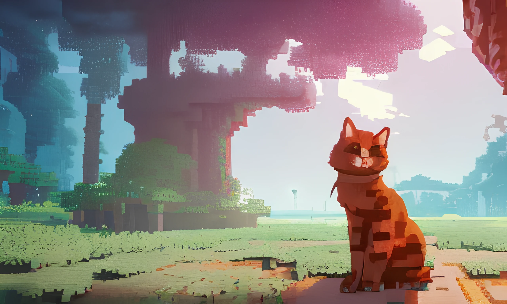

Preview
This is what the main UI currently looks like
Development
Tomate Launcher is in closed development for now. But it will be open source once it releases. I wont tell you too much more about tomate-launcher for now. So here are some images of cats for you instead.
